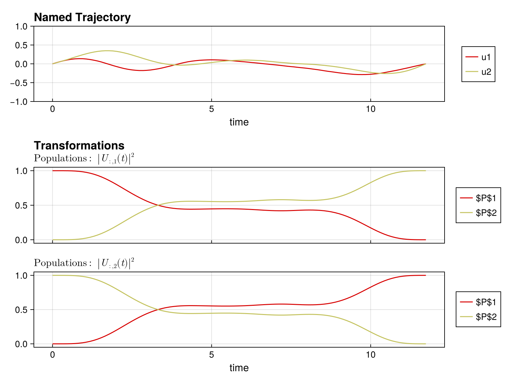
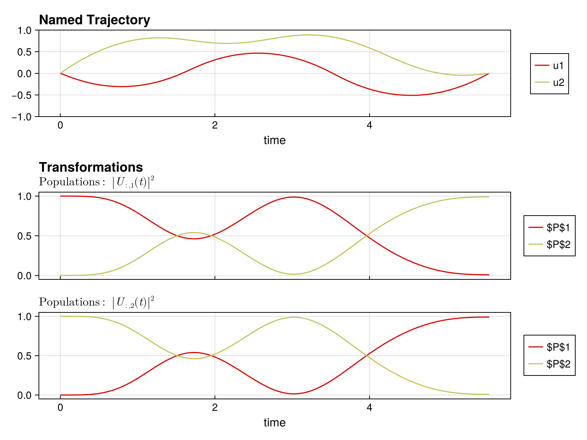

Quickstart Guide
This guide shows you how to set up and solve a quantum optimal control problem in Piccolo.jl. We'll synthesize a single-qubit X gate.
The Problem
We want to find control pulses that implement an X gate on a single qubit with system Hamiltonian:
\[H(t) = \frac{\omega}{2} \sigma_z + u_1(t) \sigma_x + u_2(t) \sigma_y\]
using PiccoloStep 1: Define the Quantum System
First, we define our quantum system by specifying the drift Hamiltonian (always-on), the drive Hamiltonians (controllable), and the bounds on control amplitudes.
# Drift Hamiltonian: qubit frequency term
H_drift = 0.5 * PAULIS[:Z]
# Drive Hamiltonians: X and Y controls
H_drives = [PAULIS[:X], PAULIS[:Y]]
# Maximum control amplitudes
drive_bounds = [1.0, 1.0]
# Create the quantum system
sys = QuantumSystem(H_drift, H_drives, drive_bounds)QuantumSystem: levels = 2, n_drives = 2Step 2: Create an Initial Pulse
We need an initial guess for the control pulse. ZeroOrderPulse represents piecewise constant controls.
# Time parameters
T = 10.0 # Total gate duration
N = 100 # Number of timesteps
# Create time vector
times = collect(range(0, T, length = N))
# Random initial controls (scaled by drive bounds)
initial_controls = 0.1 * randn(2, N)
# Create the pulse
pulse = ZeroOrderPulse(initial_controls, times)ZeroOrderPulse{DataInterpolations.ConstantInterpolation{Matrix{Float64}, Vector{Float64}, Vector{Union{}}, Float64}}(DataInterpolations.ConstantInterpolation{Matrix{Float64}, Vector{Float64}, Vector{Union{}}, Float64}([-0.03449820304699425 0.16243612285034842 … 0.11494587643256854 -0.0329062112622968; 0.014521603087992586 0.042730902968080575 … -0.0761473749976937 -0.013225638122488989], [0.0, 0.10101010101010101, 0.20202020202020202, 0.30303030303030304, 0.40404040404040403, 0.5050505050505051, 0.6060606060606061, 0.7070707070707071, 0.8080808080808081, 0.9090909090909091 … 9.090909090909092, 9.191919191919192, 9.292929292929292, 9.393939393939394, 9.494949494949495, 9.595959595959595, 9.696969696969697, 9.797979797979798, 9.8989898989899, 10.0], Union{}[], nothing, :left, DataInterpolations.ExtrapolationType.None, DataInterpolations.ExtrapolationType.None, FindFirstFunctions.Guesser{Vector{Float64}}([0.0, 0.10101010101010101, 0.20202020202020202, 0.30303030303030304, 0.40404040404040403, 0.5050505050505051, 0.6060606060606061, 0.7070707070707071, 0.8080808080808081, 0.9090909090909091 … 9.090909090909092, 9.191919191919192, 9.292929292929292, 9.393939393939394, 9.494949494949495, 9.595959595959595, 9.696969696969697, 9.797979797979798, 9.8989898989899, 10.0], Base.RefValue{Int64}(1), true), false, true), 10.0, 2, :u, [0.0, 0.0], [0.0, 0.0])Step 3: Define the Goal via a Trajectory
A UnitaryTrajectory combines the system, pulse, and target gate.
# Target: X gate
U_goal = GATES[:X]
# Create the trajectory
qtraj = UnitaryTrajectory(sys, pulse, U_goal)UnitaryTrajectory{ZeroOrderPulse{DataInterpolations.ConstantInterpolation{Matrix{Float64}, Vector{Float64}, Vector{Union{}}, Float64}}, SciMLBase.ODESolution{ComplexF64, 3, Vector{Matrix{ComplexF64}}, Nothing, Nothing, Vector{Float64}, Vector{Vector{Matrix{ComplexF64}}}, Nothing, SciMLBase.ODEProblem{Matrix{ComplexF64}, Tuple{Float64, Float64}, true, SciMLBase.NullParameters, SciMLBase.ODEFunction{true, SciMLBase.FullSpecialize, SciMLOperators.MatrixOperator{ComplexF64, Matrix{ComplexF64}, SciMLOperators.FilterKwargs{Nothing, Val{()}}, SciMLOperators.FilterKwargs{Piccolo.Quantum.Rollouts.var"#update!#_construct_operator##2"{QuantumSystem{Piccolo.Quantum.QuantumSystems.var"#26#27"{SparseArrays.SparseMatrixCSC{ComplexF64, Int64}, Vector{SparseArrays.SparseMatrixCSC{ComplexF64, Int64}}, Int64}, Piccolo.Quantum.QuantumSystems.var"#28#29"{Vector{SparseArrays.SparseMatrixCSC{Float64, Int64}}, Int64, SparseArrays.SparseMatrixCSC{Float64, Int64}}, @NamedTuple{}}}, Val{()}}}, LinearAlgebra.UniformScaling{Bool}, Nothing, Nothing, Nothing, Nothing, Nothing, Nothing, Nothing, Nothing, Nothing, Nothing, Nothing, typeof(SciMLBase.DEFAULT_OBSERVED), Nothing, Piccolo.Quantum.Rollouts.PiccoloRolloutSystem{Union{Int64, AbstractVector{Int64}, CartesianIndex, CartesianIndices}}, Nothing, Nothing}, Base.Pairs{Symbol, Vector{Float64}, Nothing, @NamedTuple{tstops::Vector{Float64}, saveat::Vector{Float64}}}, SciMLBase.StandardODEProblem}, OrdinaryDiffEqLinear.MagnusGL4, OrdinaryDiffEqCore.InterpolationData{SciMLBase.ODEFunction{true, SciMLBase.FullSpecialize, SciMLOperators.MatrixOperator{ComplexF64, Matrix{ComplexF64}, SciMLOperators.FilterKwargs{Nothing, Val{()}}, SciMLOperators.FilterKwargs{Piccolo.Quantum.Rollouts.var"#update!#_construct_operator##2"{QuantumSystem{Piccolo.Quantum.QuantumSystems.var"#26#27"{SparseArrays.SparseMatrixCSC{ComplexF64, Int64}, Vector{SparseArrays.SparseMatrixCSC{ComplexF64, Int64}}, Int64}, Piccolo.Quantum.QuantumSystems.var"#28#29"{Vector{SparseArrays.SparseMatrixCSC{Float64, Int64}}, Int64, SparseArrays.SparseMatrixCSC{Float64, Int64}}, @NamedTuple{}}}, Val{()}}}, LinearAlgebra.UniformScaling{Bool}, Nothing, Nothing, Nothing, Nothing, Nothing, Nothing, Nothing, Nothing, Nothing, Nothing, Nothing, typeof(SciMLBase.DEFAULT_OBSERVED), Nothing, Piccolo.Quantum.Rollouts.PiccoloRolloutSystem{Union{Int64, AbstractVector{Int64}, CartesianIndex, CartesianIndices}}, Nothing, Nothing}, Vector{Matrix{ComplexF64}}, Vector{Float64}, Vector{Vector{Matrix{ComplexF64}}}, Nothing, OrdinaryDiffEqLinear.MagnusGL4Cache{Matrix{ComplexF64}, Matrix{ComplexF64}, Matrix{ComplexF64}, Nothing}, Nothing}, SciMLBase.DEStats, Nothing, Nothing, Nothing, Nothing}, Matrix{ComplexF64}}(QuantumSystem: levels = 2, n_drives = 2, ZeroOrderPulse{DataInterpolations.ConstantInterpolation{Matrix{Float64}, Vector{Float64}, Vector{Union{}}, Float64}}(DataInterpolations.ConstantInterpolation{Matrix{Float64}, Vector{Float64}, Vector{Union{}}, Float64}([-0.03449820304699425 0.16243612285034842 … 0.11494587643256854 -0.0329062112622968; 0.014521603087992586 0.042730902968080575 … -0.0761473749976937 -0.013225638122488989], [0.0, 0.10101010101010101, 0.20202020202020202, 0.30303030303030304, 0.40404040404040403, 0.5050505050505051, 0.6060606060606061, 0.7070707070707071, 0.8080808080808081, 0.9090909090909091 … 9.090909090909092, 9.191919191919192, 9.292929292929292, 9.393939393939394, 9.494949494949495, 9.595959595959595, 9.696969696969697, 9.797979797979798, 9.8989898989899, 10.0], Union{}[], nothing, :left, DataInterpolations.ExtrapolationType.None, DataInterpolations.ExtrapolationType.None, FindFirstFunctions.Guesser{Vector{Float64}}([0.0, 0.10101010101010101, 0.20202020202020202, 0.30303030303030304, 0.40404040404040403, 0.5050505050505051, 0.6060606060606061, 0.7070707070707071, 0.8080808080808081, 0.9090909090909091 … 9.090909090909092, 9.191919191919192, 9.292929292929292, 9.393939393939394, 9.494949494949495, 9.595959595959595, 9.696969696969697, 9.797979797979798, 9.8989898989899, 10.0], Base.RefValue{Int64}(100), true), false, true), 10.0, 2, :u, [0.0, 0.0], [0.0, 0.0]), ComplexF64[1.0 + 0.0im 0.0 + 0.0im; 0.0 + 0.0im 1.0 + 0.0im], ComplexF64[0.0 + 0.0im 1.0 + 0.0im; 1.0 + 0.0im 0.0 + 0.0im], SciMLBase.ODESolution{ComplexF64, 3, Vector{Matrix{ComplexF64}}, Nothing, Nothing, Vector{Float64}, Vector{Vector{Matrix{ComplexF64}}}, Nothing, SciMLBase.ODEProblem{Matrix{ComplexF64}, Tuple{Float64, Float64}, true, SciMLBase.NullParameters, SciMLBase.ODEFunction{true, SciMLBase.FullSpecialize, SciMLOperators.MatrixOperator{ComplexF64, Matrix{ComplexF64}, SciMLOperators.FilterKwargs{Nothing, Val{()}}, SciMLOperators.FilterKwargs{Piccolo.Quantum.Rollouts.var"#update!#_construct_operator##2"{QuantumSystem{Piccolo.Quantum.QuantumSystems.var"#26#27"{SparseArrays.SparseMatrixCSC{ComplexF64, Int64}, Vector{SparseArrays.SparseMatrixCSC{ComplexF64, Int64}}, Int64}, Piccolo.Quantum.QuantumSystems.var"#28#29"{Vector{SparseArrays.SparseMatrixCSC{Float64, Int64}}, Int64, SparseArrays.SparseMatrixCSC{Float64, Int64}}, @NamedTuple{}}}, Val{()}}}, LinearAlgebra.UniformScaling{Bool}, Nothing, Nothing, Nothing, Nothing, Nothing, Nothing, Nothing, Nothing, Nothing, Nothing, Nothing, typeof(SciMLBase.DEFAULT_OBSERVED), Nothing, Piccolo.Quantum.Rollouts.PiccoloRolloutSystem{Union{Int64, AbstractVector{Int64}, CartesianIndex, CartesianIndices}}, Nothing, Nothing}, Base.Pairs{Symbol, Vector{Float64}, Nothing, @NamedTuple{tstops::Vector{Float64}, saveat::Vector{Float64}}}, SciMLBase.StandardODEProblem}, OrdinaryDiffEqLinear.MagnusGL4, OrdinaryDiffEqCore.InterpolationData{SciMLBase.ODEFunction{true, SciMLBase.FullSpecialize, SciMLOperators.MatrixOperator{ComplexF64, Matrix{ComplexF64}, SciMLOperators.FilterKwargs{Nothing, Val{()}}, SciMLOperators.FilterKwargs{Piccolo.Quantum.Rollouts.var"#update!#_construct_operator##2"{QuantumSystem{Piccolo.Quantum.QuantumSystems.var"#26#27"{SparseArrays.SparseMatrixCSC{ComplexF64, Int64}, Vector{SparseArrays.SparseMatrixCSC{ComplexF64, Int64}}, Int64}, Piccolo.Quantum.QuantumSystems.var"#28#29"{Vector{SparseArrays.SparseMatrixCSC{Float64, Int64}}, Int64, SparseArrays.SparseMatrixCSC{Float64, Int64}}, @NamedTuple{}}}, Val{()}}}, LinearAlgebra.UniformScaling{Bool}, Nothing, Nothing, Nothing, Nothing, Nothing, Nothing, Nothing, Nothing, Nothing, Nothing, Nothing, typeof(SciMLBase.DEFAULT_OBSERVED), Nothing, Piccolo.Quantum.Rollouts.PiccoloRolloutSystem{Union{Int64, AbstractVector{Int64}, CartesianIndex, CartesianIndices}}, Nothing, Nothing}, Vector{Matrix{ComplexF64}}, Vector{Float64}, Vector{Vector{Matrix{ComplexF64}}}, Nothing, OrdinaryDiffEqLinear.MagnusGL4Cache{Matrix{ComplexF64}, Matrix{ComplexF64}, Matrix{ComplexF64}, Nothing}, Nothing}, SciMLBase.DEStats, Nothing, Nothing, Nothing, Nothing}(Matrix{ComplexF64}[[1.0 + 0.0im 0.0 + 0.0im; 0.0 + 0.0im 1.0 + 0.0im], [0.9987432583066855 - 0.04997905254969758im -0.0014515519276812646 + 0.003448375005911726im; 0.0014515519276812648 + 0.003448375005911726im 0.9987432583066854 + 0.04997905254969759im], [0.9949062657577269 - 0.09986185183878858im -0.004731471945742954 - 0.012913019653453274im; 0.0047314719457429546 - 0.01291301965345328im 0.9949062657577267 + 0.09986185183878855im], [0.9885558437604267 - 0.14964125552027663im 0.007729958580306455 - 0.017466715597790526im; -0.007729958580306461 - 0.017466715597790533im 0.9885558437604263 + 0.14964125552027657im], [0.9798247433481151 - 0.19888633865727703im 0.008392204081292095 - 0.017812005192073186im; -0.008392204081292102 - 0.017812005192073196im 0.9798247433481148 + 0.19888633865727698im], [0.9685533515688307 - 0.24779223141745524im 0.017098678742869737 - 0.014527573754500608im; -0.017098678742869747 - 0.014527573754500617im 0.9685533515688305 + 0.24779223141745518im], [0.954859562816152 - 0.29541546845874966im 0.004802728326571639 - 0.030819638130044083im; -0.004802728326571647 - 0.030819638130044097im 0.9548595628161518 + 0.2954154684587496im], [0.9390402937697714 - 0.34227754179636505im -0.013477714229602065 - 0.029457805039836017im; 0.013477714229602061 - 0.02945780503983603im 0.9390402937697712 + 0.342277541796365im], [0.9207780310884092 - 0.38894568708969157im -0.009675755523352956 - 0.02820371809414173im; 0.00967575552335295 - 0.02820371809414174im 0.9207780310884088 + 0.38894568708969146im], [0.8992851474355854 - 0.4341265293449917im -0.017661794952822198 - 0.050084340064289336im; 0.017661794952822198 - 0.05008434006428936im 0.899285147435585 + 0.4341265293449915im] … [-0.1540905437900838 + 0.9652549906892244im 0.20742370806580673 - 0.03891416960763448im; -0.20742370806580693 - 0.03891416960763464im -0.15409054379008386 - 0.9652549906892237im], [-0.10092358257190986 + 0.9704312564002662im 0.21714712275190895 - 0.03040944200110202im; -0.2171471227519091 - 0.03040944200110217im -0.10092358257190992 - 0.9704312564002654im], [-0.045974389077130876 + 0.9709815193215333im 0.23407156618404354 - 0.01708059100793205im; -0.23407156618404368 - 0.017080591007932182im -0.04597438907713099 - 0.9709815193215324im], [-0.0007309872909003735 + 0.9681013844301957im 0.24659512251522903 - 0.04438491493309714im; -0.24659512251522914 - 0.04438491493309729im -0.0007309872909005261 - 0.9681013844301946im], [0.04705904427154559 + 0.9677137408331736im 0.24064107168477486 - 0.05837325392093081im; -0.24064107168477492 - 0.058373253920930956im 0.04705904427154538 - 0.9677137408331723im], [0.09342970830948956 + 0.9586276851163141im 0.2562213926712657 - 0.08157480537113262im; -0.2562213926712658 - 0.08157480537113279im 0.09342970830948928 - 0.958627685116313im], [0.14420052321593826 + 0.9496106637783484im 0.2646466697545772 - 0.0860693704549212im; -0.26464666975457735 - 0.08606937045492138im 0.14420052321593793 - 0.9496106637783474im], [0.18895228967175448 + 0.9389323454325869im 0.26612413381586153 - 0.10900012994955802im; -0.26612413381586175 - 0.10900012994955822im 0.18895228967175415 - 0.938932345432586im], [0.23411389085108855 + 0.9263539347710832im 0.26567877905210874 - 0.12835053566727986im; -0.26567877905210896 - 0.12835053566728008im 0.23411389085108816 - 0.9263539347710823im], [0.2765991559849802 + 0.9154833516921488im 0.2500454903403567 - 0.15119653581797737im; -0.250045490340357 - 0.15119653581797762im 0.2765991559849798 - 0.915483351692148im]], nothing, nothing, [0.0, 0.1, 0.2, 0.3, 0.4, 0.5, 0.6, 0.7, 0.8, 0.9 … 9.1, 9.2, 9.3, 9.4, 9.5, 9.6, 9.7, 9.8, 9.9, 10.0], Vector{Matrix{ComplexF64}}[[[1.0 + 0.0im 0.0 + 0.0im; 0.0 + 0.0im 1.0 + 0.0im]]], nothing, SciMLBase.ODEProblem{Matrix{ComplexF64}, Tuple{Float64, Float64}, true, SciMLBase.NullParameters, SciMLBase.ODEFunction{true, SciMLBase.FullSpecialize, SciMLOperators.MatrixOperator{ComplexF64, Matrix{ComplexF64}, SciMLOperators.FilterKwargs{Nothing, Val{()}}, SciMLOperators.FilterKwargs{Piccolo.Quantum.Rollouts.var"#update!#_construct_operator##2"{QuantumSystem{Piccolo.Quantum.QuantumSystems.var"#26#27"{SparseArrays.SparseMatrixCSC{ComplexF64, Int64}, Vector{SparseArrays.SparseMatrixCSC{ComplexF64, Int64}}, Int64}, Piccolo.Quantum.QuantumSystems.var"#28#29"{Vector{SparseArrays.SparseMatrixCSC{Float64, Int64}}, Int64, SparseArrays.SparseMatrixCSC{Float64, Int64}}, @NamedTuple{}}}, Val{()}}}, LinearAlgebra.UniformScaling{Bool}, Nothing, Nothing, Nothing, Nothing, Nothing, Nothing, Nothing, Nothing, Nothing, Nothing, Nothing, typeof(SciMLBase.DEFAULT_OBSERVED), Nothing, Piccolo.Quantum.Rollouts.PiccoloRolloutSystem{Union{Int64, AbstractVector{Int64}, CartesianIndex, CartesianIndices}}, Nothing, Nothing}, Base.Pairs{Symbol, Vector{Float64}, Nothing, @NamedTuple{tstops::Vector{Float64}, saveat::Vector{Float64}}}, SciMLBase.StandardODEProblem}(SciMLBase.ODEFunction{true, SciMLBase.FullSpecialize, SciMLOperators.MatrixOperator{ComplexF64, Matrix{ComplexF64}, SciMLOperators.FilterKwargs{Nothing, Val{()}}, SciMLOperators.FilterKwargs{Piccolo.Quantum.Rollouts.var"#update!#_construct_operator##2"{QuantumSystem{Piccolo.Quantum.QuantumSystems.var"#26#27"{SparseArrays.SparseMatrixCSC{ComplexF64, Int64}, Vector{SparseArrays.SparseMatrixCSC{ComplexF64, Int64}}, Int64}, Piccolo.Quantum.QuantumSystems.var"#28#29"{Vector{SparseArrays.SparseMatrixCSC{Float64, Int64}}, Int64, SparseArrays.SparseMatrixCSC{Float64, Int64}}, @NamedTuple{}}}, Val{()}}}, LinearAlgebra.UniformScaling{Bool}, Nothing, Nothing, Nothing, Nothing, Nothing, Nothing, Nothing, Nothing, Nothing, Nothing, Nothing, typeof(SciMLBase.DEFAULT_OBSERVED), Nothing, Piccolo.Quantum.Rollouts.PiccoloRolloutSystem{Union{Int64, AbstractVector{Int64}, CartesianIndex, CartesianIndices}}, Nothing, Nothing}(MatrixOperator(2 × 2), LinearAlgebra.UniformScaling{Bool}(true), nothing, nothing, nothing, nothing, nothing, nothing, nothing, nothing, nothing, nothing, nothing, SciMLBase.DEFAULT_OBSERVED, nothing, Piccolo.Quantum.Rollouts.PiccoloRolloutSystem{Union{Int64, AbstractVector{Int64}, CartesianIndex, CartesianIndices}}(Dict{Symbol, Union{Int64, AbstractVector{Int64}, CartesianIndex, CartesianIndices}}(:U => CartesianIndices((2, 2)), :U_2_2 => CartesianIndex(2, 2), :U_1_1 => CartesianIndex(1, 1), :U_2_1 => CartesianIndex(2, 1), :U_1_2 => CartesianIndex(1, 2)), :t, Dict{Symbol, Float64}()), nothing, nothing), ComplexF64[1.0 + 0.0im 0.0 + 0.0im; 0.0 + 0.0im 1.0 + 0.0im], (0.0, 10.0), SciMLBase.NullParameters(), Base.Pairs(:tstops => [0.0, 0.1, 0.2, 0.3, 0.4, 0.5, 0.6, 0.7, 0.8, 0.9 … 9.1, 9.2, 9.3, 9.4, 9.5, 9.6, 9.7, 9.8, 9.9, 10.0], :saveat => [0.0, 0.1, 0.2, 0.3, 0.4, 0.5, 0.6, 0.7, 0.8, 0.9 … 9.1, 9.2, 9.3, 9.4, 9.5, 9.6, 9.7, 9.8, 9.9, 10.0]), SciMLBase.StandardODEProblem()), OrdinaryDiffEqLinear.MagnusGL4(false, 30, 0), OrdinaryDiffEqCore.InterpolationData{SciMLBase.ODEFunction{true, SciMLBase.FullSpecialize, SciMLOperators.MatrixOperator{ComplexF64, Matrix{ComplexF64}, SciMLOperators.FilterKwargs{Nothing, Val{()}}, SciMLOperators.FilterKwargs{Piccolo.Quantum.Rollouts.var"#update!#_construct_operator##2"{QuantumSystem{Piccolo.Quantum.QuantumSystems.var"#26#27"{SparseArrays.SparseMatrixCSC{ComplexF64, Int64}, Vector{SparseArrays.SparseMatrixCSC{ComplexF64, Int64}}, Int64}, Piccolo.Quantum.QuantumSystems.var"#28#29"{Vector{SparseArrays.SparseMatrixCSC{Float64, Int64}}, Int64, SparseArrays.SparseMatrixCSC{Float64, Int64}}, @NamedTuple{}}}, Val{()}}}, LinearAlgebra.UniformScaling{Bool}, Nothing, Nothing, Nothing, Nothing, Nothing, Nothing, Nothing, Nothing, Nothing, Nothing, Nothing, typeof(SciMLBase.DEFAULT_OBSERVED), Nothing, Piccolo.Quantum.Rollouts.PiccoloRolloutSystem{Union{Int64, AbstractVector{Int64}, CartesianIndex, CartesianIndices}}, Nothing, Nothing}, Vector{Matrix{ComplexF64}}, Vector{Float64}, Vector{Vector{Matrix{ComplexF64}}}, Nothing, OrdinaryDiffEqLinear.MagnusGL4Cache{Matrix{ComplexF64}, Matrix{ComplexF64}, Matrix{ComplexF64}, Nothing}, Nothing}(SciMLBase.ODEFunction{true, SciMLBase.FullSpecialize, SciMLOperators.MatrixOperator{ComplexF64, Matrix{ComplexF64}, SciMLOperators.FilterKwargs{Nothing, Val{()}}, SciMLOperators.FilterKwargs{Piccolo.Quantum.Rollouts.var"#update!#_construct_operator##2"{QuantumSystem{Piccolo.Quantum.QuantumSystems.var"#26#27"{SparseArrays.SparseMatrixCSC{ComplexF64, Int64}, Vector{SparseArrays.SparseMatrixCSC{ComplexF64, Int64}}, Int64}, Piccolo.Quantum.QuantumSystems.var"#28#29"{Vector{SparseArrays.SparseMatrixCSC{Float64, Int64}}, Int64, SparseArrays.SparseMatrixCSC{Float64, Int64}}, @NamedTuple{}}}, Val{()}}}, LinearAlgebra.UniformScaling{Bool}, Nothing, Nothing, Nothing, Nothing, Nothing, Nothing, Nothing, Nothing, Nothing, Nothing, Nothing, typeof(SciMLBase.DEFAULT_OBSERVED), Nothing, Piccolo.Quantum.Rollouts.PiccoloRolloutSystem{Union{Int64, AbstractVector{Int64}, CartesianIndex, CartesianIndices}}, Nothing, Nothing}(MatrixOperator(2 × 2), LinearAlgebra.UniformScaling{Bool}(true), nothing, nothing, nothing, nothing, nothing, nothing, nothing, nothing, nothing, nothing, nothing, SciMLBase.DEFAULT_OBSERVED, nothing, Piccolo.Quantum.Rollouts.PiccoloRolloutSystem{Union{Int64, AbstractVector{Int64}, CartesianIndex, CartesianIndices}}(Dict{Symbol, Union{Int64, AbstractVector{Int64}, CartesianIndex, CartesianIndices}}(:U => CartesianIndices((2, 2)), :U_2_2 => CartesianIndex(2, 2), :U_1_1 => CartesianIndex(1, 1), :U_2_1 => CartesianIndex(2, 1), :U_1_2 => CartesianIndex(1, 2)), :t, Dict{Symbol, Float64}()), nothing, nothing), Matrix{ComplexF64}[[1.0 + 0.0im 0.0 + 0.0im; 0.0 + 0.0im 1.0 + 0.0im], [0.9987432583066855 - 0.04997905254969758im -0.0014515519276812646 + 0.003448375005911726im; 0.0014515519276812648 + 0.003448375005911726im 0.9987432583066854 + 0.04997905254969759im], [0.9949062657577269 - 0.09986185183878858im -0.004731471945742954 - 0.012913019653453274im; 0.0047314719457429546 - 0.01291301965345328im 0.9949062657577267 + 0.09986185183878855im], [0.9885558437604267 - 0.14964125552027663im 0.007729958580306455 - 0.017466715597790526im; -0.007729958580306461 - 0.017466715597790533im 0.9885558437604263 + 0.14964125552027657im], [0.9798247433481151 - 0.19888633865727703im 0.008392204081292095 - 0.017812005192073186im; -0.008392204081292102 - 0.017812005192073196im 0.9798247433481148 + 0.19888633865727698im], [0.9685533515688307 - 0.24779223141745524im 0.017098678742869737 - 0.014527573754500608im; -0.017098678742869747 - 0.014527573754500617im 0.9685533515688305 + 0.24779223141745518im], [0.954859562816152 - 0.29541546845874966im 0.004802728326571639 - 0.030819638130044083im; -0.004802728326571647 - 0.030819638130044097im 0.9548595628161518 + 0.2954154684587496im], [0.9390402937697714 - 0.34227754179636505im -0.013477714229602065 - 0.029457805039836017im; 0.013477714229602061 - 0.02945780503983603im 0.9390402937697712 + 0.342277541796365im], [0.9207780310884092 - 0.38894568708969157im -0.009675755523352956 - 0.02820371809414173im; 0.00967575552335295 - 0.02820371809414174im 0.9207780310884088 + 0.38894568708969146im], [0.8992851474355854 - 0.4341265293449917im -0.017661794952822198 - 0.050084340064289336im; 0.017661794952822198 - 0.05008434006428936im 0.899285147435585 + 0.4341265293449915im] … [-0.1540905437900838 + 0.9652549906892244im 0.20742370806580673 - 0.03891416960763448im; -0.20742370806580693 - 0.03891416960763464im -0.15409054379008386 - 0.9652549906892237im], [-0.10092358257190986 + 0.9704312564002662im 0.21714712275190895 - 0.03040944200110202im; -0.2171471227519091 - 0.03040944200110217im -0.10092358257190992 - 0.9704312564002654im], [-0.045974389077130876 + 0.9709815193215333im 0.23407156618404354 - 0.01708059100793205im; -0.23407156618404368 - 0.017080591007932182im -0.04597438907713099 - 0.9709815193215324im], [-0.0007309872909003735 + 0.9681013844301957im 0.24659512251522903 - 0.04438491493309714im; -0.24659512251522914 - 0.04438491493309729im -0.0007309872909005261 - 0.9681013844301946im], [0.04705904427154559 + 0.9677137408331736im 0.24064107168477486 - 0.05837325392093081im; -0.24064107168477492 - 0.058373253920930956im 0.04705904427154538 - 0.9677137408331723im], [0.09342970830948956 + 0.9586276851163141im 0.2562213926712657 - 0.08157480537113262im; -0.2562213926712658 - 0.08157480537113279im 0.09342970830948928 - 0.958627685116313im], [0.14420052321593826 + 0.9496106637783484im 0.2646466697545772 - 0.0860693704549212im; -0.26464666975457735 - 0.08606937045492138im 0.14420052321593793 - 0.9496106637783474im], [0.18895228967175448 + 0.9389323454325869im 0.26612413381586153 - 0.10900012994955802im; -0.26612413381586175 - 0.10900012994955822im 0.18895228967175415 - 0.938932345432586im], [0.23411389085108855 + 0.9263539347710832im 0.26567877905210874 - 0.12835053566727986im; -0.26567877905210896 - 0.12835053566728008im 0.23411389085108816 - 0.9263539347710823im], [0.2765991559849802 + 0.9154833516921488im 0.2500454903403567 - 0.15119653581797737im; -0.250045490340357 - 0.15119653581797762im 0.2765991559849798 - 0.915483351692148im]], [0.0, 0.1, 0.2, 0.3, 0.4, 0.5, 0.6, 0.7, 0.8, 0.9 … 9.1, 9.2, 9.3, 9.4, 9.5, 9.6, 9.7, 9.8, 9.9, 10.0], Vector{Matrix{ComplexF64}}[[[1.0 + 0.0im 0.0 + 0.0im; 0.0 + 0.0im 1.0 + 0.0im]]], nothing, false, OrdinaryDiffEqLinear.MagnusGL4Cache{Matrix{ComplexF64}, Matrix{ComplexF64}, Matrix{ComplexF64}, Nothing}(ComplexF64[0.2765991559849802 + 0.9154833516921488im 0.2500454903403567 - 0.15119653581797737im; -0.250045490340357 - 0.15119653581797762im 0.2765991559849798 - 0.915483351692148im], ComplexF64[0.23411389085108855 + 0.9263539347710832im 0.26567877905210874 - 0.12835053566727986im; -0.26567877905210896 - 0.12835053566728008im 0.23411389085108816 - 0.9263539347710823im], ComplexF64[0.23411389085108855 + 0.9263539347710832im 0.26567877905210874 - 0.12835053566727986im; -0.26567877905210896 - 0.12835053566728008im 0.23411389085108816 - 0.9263539347710823im], ComplexF64[0.0 + 0.0im 0.0 + 0.0im; 0.0 + 0.0im 0.0 + 0.0im], ComplexF64[0.4281928609552661 - 0.09629182168847611im -0.15282867451385346 - 0.23028923634657408im; 0.15282867451385365 - 0.2302892363465743im 0.4281928609552657 + 0.09629182168847593im], ComplexF64[0.0 + 0.0im 0.0 + 0.0im 0.0 + 0.0im 0.0 + 0.0im; 0.0 + 0.0im 0.0 + 0.0im 0.0 + 0.0im 0.0 + 0.0im; 0.0 + 0.0im 0.0 + 0.0im 0.0 + 0.0im 0.0 + 0.0im; 0.0 + 0.0im 0.0 + 0.0im 0.0 + 0.0im 0.0 + 0.0im], ComplexF64[0.4594099698264263 - 0.148527298390917im -0.041814978989048075 - 0.1280287664250073im; 0.04181497898904817 - 0.12802876642500743im 0.4594099698264259 + 0.14852729839091677im], nothing), nothing, false), false, 0, SciMLBase.DEStats(101, 0, 0, 0, 0, 0, 0, 0, 0, 0, 100, 0, 0.0), nothing, SciMLBase.ReturnCode.Success, nothing, nothing, nothing))Step 4: Set Up the Optimization Problem
SmoothPulseProblem creates the optimization problem with:
- Fidelity objective (weight Q)
- Regularization for smooth controls (weight R)
- Derivative bounds for control smoothness
qcp = SmoothPulseProblem(
qtraj,
N;
Q = 100.0, # Fidelity weight
R = 1e-2, # Regularization weight
ddu_bound = 1.0, # Control acceleration bound
)QuantumControlProblem{UnitaryTrajectory{ZeroOrderPulse{DataInterpolations.ConstantInterpolation{Matrix{Float64}, Vector{Float64}, Vector{Union{}}, Float64}}, SciMLBase.ODESolution{ComplexF64, 3, Vector{Matrix{ComplexF64}}, Nothing, Nothing, Vector{Float64}, Vector{Vector{Matrix{ComplexF64}}}, Nothing, SciMLBase.ODEProblem{Matrix{ComplexF64}, Tuple{Float64, Float64}, true, SciMLBase.NullParameters, SciMLBase.ODEFunction{true, SciMLBase.FullSpecialize, SciMLOperators.MatrixOperator{ComplexF64, Matrix{ComplexF64}, SciMLOperators.FilterKwargs{Nothing, Val{()}}, SciMLOperators.FilterKwargs{Piccolo.Quantum.Rollouts.var"#update!#_construct_operator##2"{QuantumSystem{Piccolo.Quantum.QuantumSystems.var"#26#27"{SparseArrays.SparseMatrixCSC{ComplexF64, Int64}, Vector{SparseArrays.SparseMatrixCSC{ComplexF64, Int64}}, Int64}, Piccolo.Quantum.QuantumSystems.var"#28#29"{Vector{SparseArrays.SparseMatrixCSC{Float64, Int64}}, Int64, SparseArrays.SparseMatrixCSC{Float64, Int64}}, @NamedTuple{}}}, Val{()}}}, LinearAlgebra.UniformScaling{Bool}, Nothing, Nothing, Nothing, Nothing, Nothing, Nothing, Nothing, Nothing, Nothing, Nothing, Nothing, typeof(SciMLBase.DEFAULT_OBSERVED), Nothing, Piccolo.Quantum.Rollouts.PiccoloRolloutSystem{Union{Int64, AbstractVector{Int64}, CartesianIndex, CartesianIndices}}, Nothing, Nothing}, Base.Pairs{Symbol, Vector{Float64}, Nothing, @NamedTuple{tstops::Vector{Float64}, saveat::Vector{Float64}}}, SciMLBase.StandardODEProblem}, OrdinaryDiffEqLinear.MagnusGL4, OrdinaryDiffEqCore.InterpolationData{SciMLBase.ODEFunction{true, SciMLBase.FullSpecialize, SciMLOperators.MatrixOperator{ComplexF64, Matrix{ComplexF64}, SciMLOperators.FilterKwargs{Nothing, Val{()}}, SciMLOperators.FilterKwargs{Piccolo.Quantum.Rollouts.var"#update!#_construct_operator##2"{QuantumSystem{Piccolo.Quantum.QuantumSystems.var"#26#27"{SparseArrays.SparseMatrixCSC{ComplexF64, Int64}, Vector{SparseArrays.SparseMatrixCSC{ComplexF64, Int64}}, Int64}, Piccolo.Quantum.QuantumSystems.var"#28#29"{Vector{SparseArrays.SparseMatrixCSC{Float64, Int64}}, Int64, SparseArrays.SparseMatrixCSC{Float64, Int64}}, @NamedTuple{}}}, Val{()}}}, LinearAlgebra.UniformScaling{Bool}, Nothing, Nothing, Nothing, Nothing, Nothing, Nothing, Nothing, Nothing, Nothing, Nothing, Nothing, typeof(SciMLBase.DEFAULT_OBSERVED), Nothing, Piccolo.Quantum.Rollouts.PiccoloRolloutSystem{Union{Int64, AbstractVector{Int64}, CartesianIndex, CartesianIndices}}, Nothing, Nothing}, Vector{Matrix{ComplexF64}}, Vector{Float64}, Vector{Vector{Matrix{ComplexF64}}}, Nothing, OrdinaryDiffEqLinear.MagnusGL4Cache{Matrix{ComplexF64}, Matrix{ComplexF64}, Matrix{ComplexF64}, Nothing}, Nothing}, SciMLBase.DEStats, Nothing, Nothing, Nothing, Nothing}, Matrix{ComplexF64}}}
System: QuantumSystem{Piccolo.Quantum.QuantumSystems.var"#26#27"{SparseArrays.SparseMatrixCSC{ComplexF64, Int64}, Vector{SparseArrays.SparseMatrixCSC{ComplexF64, Int64}}, Int64}, Piccolo.Quantum.QuantumSystems.var"#28#29"{Vector{SparseArrays.SparseMatrixCSC{Float64, Int64}}, Int64, SparseArrays.SparseMatrixCSC{Float64, Int64}}, @NamedTuple{}}
Goal: Matrix{ComplexF64}
Trajectory: 100 knots
State: Ũ⃗
Controls: uStep 5: Solve!
cached_solve!(qcp, "quickstart"; max_iter = 20, verbose = false, print_level = 1)Step 6: Analyze Results
After solving, we can check the fidelity and examine the optimized controls.
# Check final fidelity
fidelity(qcp)0.9999501057383846Access the trajectory and check the final unitary:
traj = get_trajectory(qcp)
U_final = iso_vec_to_operator(traj[:Ũ⃗][:, end])
round.(U_final, digits = 3)2×2 Matrix{ComplexF64}:
0.0+0.0im 0.001-1.0im
-0.001-1.0im 0.0-0.0imVisualization
Piccolo provides specialized plotting functions for quantum trajectories:
using CairoMakie
# Plot the unitary evolution (state populations over time)
fig = plot_unitary_populations(traj)
Minimum Time Optimization
Now let's find the shortest gate duration that achieves 99% fidelity.
First, we need to create a new problem with variable timesteps enabled:
# Create problem with free-time optimization
qcp_free = SmoothPulseProblem(
qtraj,
N;
Q = 100.0,
R = 1e-2,
ddu_bound = 1.0,
Δt_bounds = (0.01, 0.5), # Enable variable timesteps
)
cached_solve!(
qcp_free,
"quickstart_free_time";
max_iter = 20,
verbose = false,
print_level = 1,
)
# Convert to minimum time problem
qcp_mintime = MinimumTimeProblem(qcp_free; final_fidelity = 0.99)
cached_solve!(
qcp_mintime,
"quickstart_mintime";
max_iter = 20,
verbose = false,
print_level = 1,
) constructing SmoothPulseProblem for UnitaryTrajectory...
applying timesteps_all_equal constraint: Δt
constructing MinimumTimeProblem from QuantumControlProblem{UnitaryTrajectory{ZeroOrderPulse{DataInterpolations.ConstantInterpolation{Matrix{Float64}, Vector{Float64}, Vector{Union{}}, Float64}}, SciMLBase.ODESolution{ComplexF64, 3, Vector{Matrix{ComplexF64}}, Nothing, Nothing, Vector{Float64}, Vector{Vector{Matrix{ComplexF64}}}, Nothing, SciMLBase.ODEProblem{Matrix{ComplexF64}, Tuple{Float64, Float64}, true, SciMLBase.NullParameters, SciMLBase.ODEFunction{true, SciMLBase.FullSpecialize, SciMLOperators.MatrixOperator{ComplexF64, Matrix{ComplexF64}, SciMLOperators.FilterKwargs{Nothing, Val{()}}, SciMLOperators.FilterKwargs{Piccolo.Quantum.Rollouts.var"#update!#_construct_operator##2"{QuantumSystem{Piccolo.Quantum.QuantumSystems.var"#26#27"{SparseArrays.SparseMatrixCSC{ComplexF64, Int64}, Vector{SparseArrays.SparseMatrixCSC{ComplexF64, Int64}}, Int64}, Piccolo.Quantum.QuantumSystems.var"#28#29"{Vector{SparseArrays.SparseMatrixCSC{Float64, Int64}}, Int64, SparseArrays.SparseMatrixCSC{Float64, Int64}}, @NamedTuple{}}}, Val{()}}}, LinearAlgebra.UniformScaling{Bool}, Nothing, Nothing, Nothing, Nothing, Nothing, Nothing, Nothing, Nothing, Nothing, Nothing, Nothing, typeof(SciMLBase.DEFAULT_OBSERVED), Nothing, Piccolo.Quantum.Rollouts.PiccoloRolloutSystem{Union{Int64, AbstractVector{Int64}, CartesianIndex, CartesianIndices}}, Nothing, Nothing}, Base.Pairs{Symbol, Vector{Float64}, Nothing, @NamedTuple{tstops::Vector{Float64}, saveat::Vector{Float64}}}, SciMLBase.StandardODEProblem}, OrdinaryDiffEqLinear.MagnusGL4, OrdinaryDiffEqCore.InterpolationData{SciMLBase.ODEFunction{true, SciMLBase.FullSpecialize, SciMLOperators.MatrixOperator{ComplexF64, Matrix{ComplexF64}, SciMLOperators.FilterKwargs{Nothing, Val{()}}, SciMLOperators.FilterKwargs{Piccolo.Quantum.Rollouts.var"#update!#_construct_operator##2"{QuantumSystem{Piccolo.Quantum.QuantumSystems.var"#26#27"{SparseArrays.SparseMatrixCSC{ComplexF64, Int64}, Vector{SparseArrays.SparseMatrixCSC{ComplexF64, Int64}}, Int64}, Piccolo.Quantum.QuantumSystems.var"#28#29"{Vector{SparseArrays.SparseMatrixCSC{Float64, Int64}}, Int64, SparseArrays.SparseMatrixCSC{Float64, Int64}}, @NamedTuple{}}}, Val{()}}}, LinearAlgebra.UniformScaling{Bool}, Nothing, Nothing, Nothing, Nothing, Nothing, Nothing, Nothing, Nothing, Nothing, Nothing, Nothing, typeof(SciMLBase.DEFAULT_OBSERVED), Nothing, Piccolo.Quantum.Rollouts.PiccoloRolloutSystem{Union{Int64, AbstractVector{Int64}, CartesianIndex, CartesianIndices}}, Nothing, Nothing}, Vector{Matrix{ComplexF64}}, Vector{Float64}, Vector{Vector{Matrix{ComplexF64}}}, Nothing, OrdinaryDiffEqLinear.MagnusGL4Cache{Matrix{ComplexF64}, Matrix{ComplexF64}, Matrix{ComplexF64}, Nothing}, Nothing}, SciMLBase.DEStats, Nothing, Nothing, Nothing, Nothing}, Matrix{ComplexF64}}}...
final fidelity constraint: 0.99
minimum-time weight D: 100.0Compare durations:
initial_duration = sum(get_timesteps(get_trajectory(qcp_free)))
minimum_duration = sum(get_timesteps(get_trajectory(qcp_mintime)))
initial_duration12.429085117242698minimum_duration5.605073009405118fidelity(qcp_mintime)0.9916340773822779Plot the time-optimal solution:
fig_mintime = plot_unitary_populations(get_trajectory(qcp_mintime))
Next Steps
- Learn about different Problem Templates for various optimization scenarios
- Explore Tutorials for more complex examples
- See Concepts for detailed documentation of types and functions
This page was generated using Literate.jl.